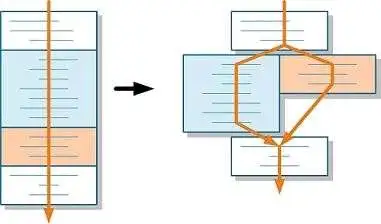

Hello, My Name Is Yuval Keshet and I'll will teach you about efficent shopping checkup.
We all know the long lines we had to wait in shops, and the constant bickering about the cashiers suck, but have you ever considered that a major reason is the fact the cashier and buyer don't co-opreate as much? if the cashier moves your items while you could've done that beforehand, or doesn't ask for packing bags from the start, you're not efficent enough. So let me teach you my patent techniques about retail shopping.
Stage 1: Before Your Turn

CooperationIs the key for optimizing your time on the checkout. And that includes actions you take before your turn in the checkup. The most important things to do before you start is:
Prepare your means of payment for quick and ready. Whatever it's credit or cash, be sure that you can easily take out said payment and use it. Also consider what amount of bags you will need, if at all.
If space is avilable, start putting your stuff on the alloted space. And if more space is presnting itself while the current checkout is happening, either put your remaining shopping there or move some from the back to the front. this will allow the person next to you to use said stragety as well more sooner.
When all your items are placed, allow the next person to place their place. that can be usually done by moving from the front of the checkup belt, and more next to the person in the checkup
Stage 2: Your Turn!
Now that the person in front your has paid and it's recpict has been paid, the moment that the cashier finishes her payment process, actions will be fast and quick.
The first moment you notice the cashier starts your checkup, address your wanted amount of plastic bags (Yes, even if it's zero) and wait for them to be given for you. if you use your own bags, don't wait and contiune.
After your bags are in your hands and items are checked up, begin inserting them. one by one. keep doing so until you notice that all the items have been checked up.
When that happens, stop your packing, take out your payment method and address it (If it's cash, address you want in cash and how much you pay. If it's credit, address that you want in credit, and the number of payments)
The moment the payment has been recieved, contiune on your packing, but be wary for when the receipt and/or change is ready.
When the receipt and/or change is ready, stop your repacking, take it, put it somewhere safe and finish your packing. Be wary that the next person's packing could've already started while you still packing, so be sure you take only your items.
Conclusion
My, yours and everyone's time is limited, and most of it can salvaged with tatics like these. so if you want for you and many other to have to exprience less line and more time, consider following those tatics to your best ability.